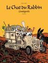
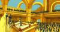
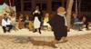

Bienvenue sur le site du Chat du Rabbin. Vous trouverez sur ce site toutes les informations concernant la série à succès de Joann Sfar. Découvrez les albums du chat, le Cheikh Mohammed Sfar, les fausses couvertures et plus encore...
Bonne visite.
Actualités
Interview de Joann Sfar et Antoine Delesvaux
Découvrez sur le site de la Fnac l'interview de Joann Sfar et Antoine Delesvaux réalisé à l'occasion de la sortie du film Le Chat du Raabin.
Seconde partie de l'intégrale du Chat du Rabbin
Celles et ceux qui avaient acheté le premier volume de l'intégrale du Chat du Rabbin vont bientôt être satisfait. Le second volume de cette intégrale sortira en effet le 25 novembre prochain.
DVD et Blu-ray disponibles à la vente
Le DVD et Blu-ray du film le Chat du Rabbin sont disponibles à la vente depuis le 6 Octobre.
Date de sortie du DVD le Chat du Rabbin
Le DVD et le Blu-Ray du film Le Chat du Rabbin sont prévus pour le 5 Octobre 2011.
Bande originale du film Le Chat du Rabbin
La bande originale du film Le Chat du Rabbin est désormais disponibles à la vente.
Nouvelle couverture de l'intégrale du Chat du Rabbin
Une nouvelle couverture de l'intégrale du Chat du Rabbin est apparue récemment à l'occasion de la sortie du film.